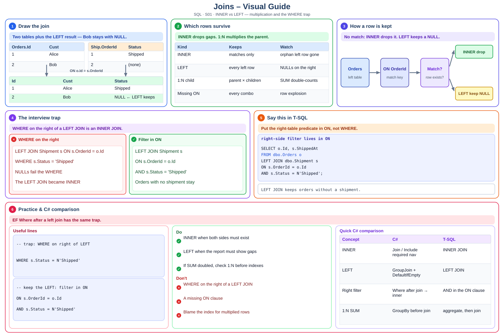

Definition
- INNER JOIN: Only rows that match on both sides — active devices with a customer.
- LEFT JOIN: All orders, even with no shipment yet.
- Multiplication: Joining to a child with many rows duplicates the parent — SUM then double-counts unless you aggregate first.
- Filter trap: Putting a right-table filter in WHERE after LEFT JOIN turns it into an INNER JOIN.

Decision flowchart
Read from the top. If the answer is YES, stop at that box. If NO, go down.
Step-by-step (beginner friendly)
- Step 1 — INNER JOIN (before/after)
What it means: Only rows that match on both sides — active devices with a customer.
❌ BeforeLEFT JOIN Shipment s ON s.OrderId = o.Id WHERE s.Status = 'Shipped'✔ AfterLEFT JOIN Shipment s ON s.OrderId = o.Id AND s.Status = 'Shipped'Takeaway: INNER JOIN — pair definition with Before → After.
- Step 2 — LEFT JOIN (before/after)
What it means: All orders, even with no shipment yet.
❌ Before// BEFORE — skip LEFT JOIN✔ After// AFTER — apply LEFT JOIN with a project exampleTakeaway: LEFT JOIN — pair definition with Before → After.
- Step 3 — Multiplication (before/after)
What it means: Joining to a child with many rows duplicates the parent — SUM then double-counts unless you aggregate first.
❌ Before// BEFORE — skip Multiplication✔ After// AFTER — apply Multiplication with a project exampleTakeaway: Multiplication — pair definition with Before → After.
- Step 4 — Filter trap (before/after)
What it means: Putting a right-table filter in WHERE after LEFT JOIN turns it into an INNER JOIN.
❌ Before// BEFORE — skip Filter trap✔ After// AFTER — apply Filter trap with a project exampleTakeaway: Filter trap — pair definition with Before → After.
Interview prep S01 — INNER, LEFT, OUTER, when rows multiply, how a missing ON clause explodes rows.
- What is it?
- Where did you use it? (actual project)
- Why did you use it? (design decision)
- How did you implement it? (hands-on)
- What problem did it solve?
Quick reference
| Idea | Remember |
|---|---|
INNER JOIN | Only rows that match on both sides — active devices with a customer. |
LEFT JOIN | All orders, even with no shipment yet. |
Multiplication | Joining to a child with many rows duplicates the parent — SUM then double-counts unless you aggregate first. |
Filter trap | Putting a right-table filter in WHERE after LEFT JOIN turns it into an INNER JOIN. |
1. INNER JOIN — full example
What it means: Only rows that match on both sides — active devices with a customer.
Takeaway: INNER JOIN — explain with a project story, not only a definition.
2. LEFT JOIN — full example
What it means: All orders, even with no shipment yet.
Takeaway: LEFT JOIN — explain with a project story, not only a definition.
3. Multiplication — full example
What it means: Joining to a child with many rows duplicates the parent — SUM then double-counts unless you aggregate first.
Takeaway: Multiplication — explain with a project story, not only a definition.
4. Filter trap — full example
What it means: Putting a right-table filter in WHERE after LEFT JOIN turns it into an INNER JOIN.
Takeaway: Filter trap — explain with a project story, not only a definition.
Self-check quiz
INNER JOIN?Show answer
LEFT JOIN matter?Show answer
Show answer
Q: Explain Joins for an interviewer.
A: I pick INNER when both sides must exist, LEFT when the report must show gaps. If numbers look doubled I check for a one-to-many join before I blame the index.
Q: What does interview-ready look like for this skill?
A: Draws one reporting query from the project and names the join type
Q: Give the Interview 5 in one breath.
A: What it is, where I used it, why we chose it, how I implemented it, and the problem it solved.
Practice
- Explain
INNER JOINwith a project example. - Compare
LEFT JOINwith an alternative. - Answer the Interview 5 for: Draws one reporting query from the project and names the join type
- Speak the Interview 5 for S01 out loud (60 seconds).
LEFT JOIN keeps orders without a shipment.
Syntax-colored view
| 1 | SELECT o.Id, s.ShippedAt |
| 2 | FROM dbo.Orders o |
| 3 | LEFT JOIN dbo.Shipment s |
| 4 | ON s.OrderId = o.Id AND s.Status = N'Shipped'; |